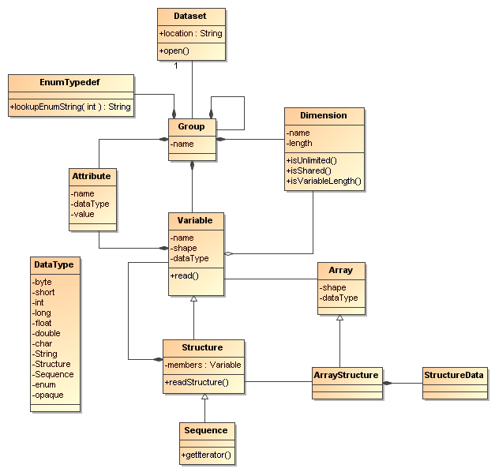

for version 4.4+ of the Netcdf-Java/CDM library
An NcML document is an XML document (aka an instance document) whose contents are described and constrained by NcML Schema-2.2. NcML Schema-2.2 combines the earlier NcML core schema which is an XML description of the netCDF-Java / CDM data model, with the earlier NcML dataset schema, which allows you to define, redefine, aggregate, and subset existing netCDF files.
An NcML document represents a generic netCDF dataset, i.e. a container for data conforming to the netCDF data model. For instance, it might represent an existing netCDF file, a netCDF file not yet written, a GRIB file read through the netCDF-Java library, a subset of a netCDF file, an aggregation of netCDF files, or a self-contained dataset (i.e. all the data is included in the NcML document and there is no seperate netCDF file holding the data). An NcML document therefore should not necessarily be thought of as a physical netCDF file, but rather the "public interface" to a set of data conforming to the netCDF data model.
NcML Schema-2.2 is written in the W3C XML Schema language, and essentially represents the netCDF-Java / CDM data model, which schematically looks like this in UML:

CDM UML
Aggregation specific elements are listed in red. The forecastModelRunCollection, forecastModelRunSingleCollection, joinExisting and joinNew aggregation types are called outer aggregations because they work on the outer (first) dimension.
<?xml version="1.0" encoding="UTF-8"?>
<xsd:schema targetNamespace="http://www.unidata.ucar.edu/namespaces/netcdf/ncml-2.2"
xmlns:xsd="http://www.w3.org/2001/XMLSchema"
xmlns="http://www.unidata.ucar.edu/namespaces/netcdf/ncml-2.2"
elementFormDefault="qualified">
The element netcdf is the root tag of the NcML instance document, and is said to define a NetCDF dataset.
<!-- XML encoding of Netcdf container object --> <xsd:element name="netcdf">
<xsd:complexType>
<xsd:sequence> (1) <xsd:choice minOccurs="0">
<xsd:element name="readMetadata"/>
<xsd:element name="explicit"/>
</xsd:choice> (2) <xsd:element name="iospParam" minOccurs="0" />
(3) <xsd:choice minOccurs="0" maxOccurs="unbounded">
<xsd:element ref="group"/> <xsd:element ref="dimension"/>
<xsd:element ref="variable"/>
<xsd:element ref="attribute"/>
<xsd:element ref="remove"/>
</xsd:choice>
(4) <xsd:element ref="aggregation" minOccurs="0"/>
</xsd:sequence> (5)<xsd:attribute name="location" type="xsd:anyURI"/> (6)<xsd:attribute name="id" type="xsd:string"/> (7)<xsd:attribute name="title" type="xsd:string"/> (8)<xsd:attribute name="enhance" type="xsd:string"/> (9)<xsd:attribute name="addRecords" type="xsd:boolean"/> (10)<xsd:attribute name="iosp" type="xsd:string"/>
<xsd:attribute name="iospParam" type="xsd:string"/> <xsd:attribute name="bufferSize" type="xsd:int"/> <!-- for netcdf elements nested inside of aggregation elements --> (11)<xsd:attribute name="ncoords" type="xsd:string"/> (12)<xsd:attribute name="coordValue" type="xsd:string"/> (13)<xsd:attribute name="section" type="xsd:string"/>
</xsd:complexType> </xsd:element>
An example:
<?xml version="1.0" encoding="UTF-8"?>
<netcdf xmlns="http://www.unidata.ucar.edu/namespaces/netcdf/ncml-2.2" location="C:/dev/github/thredds/cdm/src/test/data/testWrite.nc">
<dimension name="lat" length="64" />
<dimension name="lon" length="128" />
<dimension name="names_len" length="80" />
<dimension name="names" length="3" />
<variable name="names" type="char" shape="names names_len" />
<variable name="temperature" shape="lat lon" type="double">
<attribute name="units" value="K" />
<attribute name="scale" type="int" value="1 2 3" />
</variable>
</netcdf>
A group element represents a netCDF group, a container for variable, dimension, attribute, or other group elements.
<xsd:element name="group">
<xsd:complexType>
(1)<xsd:choice minOccurs="0" maxOccurs="unbounded">
<xsd:element ref="enumTypedef"/>
<xsd:element ref="dimension"/>
<xsd:element ref="variable"/>
<xsd:element ref="attribute"/>
<xsd:element ref="group"/>
<xsd:element ref="remove"/>
</xsd:choice>
(2)<xsd:attribute name="name" type="xsd:string" use="required"/>
(3)<xsd:attribute name="orgName" type="xsd:string"/>
</xsd:complexType>
</xsd:element>
The dimension element represents a netCDF dimension, i.e. a named index of specified length.
<!-- XML encoding of Dimension object --> <xsd:element name="dimension">
<xsd:complexType>
(1) <xsd:attribute name="name" type="xsd:token" use="required"/>
(2) <xsd:attribute name="length" type="xsd:string"/>
(3) <xsd:attribute name="isUnlimited" type="xsd:boolean" default="false"/>
(4) <xsd:attribute name="isVariableLength" type="xsd:boolean" default="false"/>
(5) <xsd:attribute name="isShared" type="xsd:boolean" default="true"/>
(6) <xsd:attribute name="orgName" type="xsd:string"/>
</xsd:complexType>
</xsd:element>
A variable element represents a netCDF variable, i.e. a scalar or multidimensional array of specified type indexed by 0 or more dimensions.
<xsd:element name="variable">
<xsd:complexType>
<xsd:sequence>
(1) <xsd:element ref="attribute" minOccurs="0" maxOccurs="unbounded"/>
(2) <xsd:element ref="values" minOccurs="0"/>
(3) <xsd:element ref="variable" minOccurs="0" maxOccurs="unbounded"/>
(4) <xsd:element ref="logicalSection" minOccurs="0"/>
(5) <xsd:element ref="logicalSlice" minOccurs="0"/>
(6) <xsd:element ref="remove" minOccurs="0" maxOccurs="unbounded" />
</xsd:sequence>
(7) <xsd:attribute name="name" type="xsd:token" use="required" />
(8) <xsd:attribute name="type" type="DataType" use="required" />
(9) <xsd:attribute name="typedef" type="xsd:string"/>
(10) <xsd:attribute name="shape" type="xsd:token" />
(11) <xsd:attribute name="orgName" type="xsd:string"/>
</xsd:complexType>
</xsd:element>
A values element specifies the data values of a variable, either by listing them for example: <values>-109.0 -107.0 -115.0 93.923230</values> or by specifying a start and increment, for example: <values start="-109.5" increment="2.0" />. For a multi-dimensional variable, the values must be listed compatibly with the size and shape of the variable (slowest varying dimension first).
<xsd:element name="values">
<xsd:complexType mixed="true">
(1) <xsd:attribute name="start" type="xsd:float"/>
<xsd:attribute name="increment" type="xsd:float"/>
<xsd:attribute name="npts" type="xsd:int"/>
(2) <xsd:attribute name="separator" type="xsd:string" />
(3) <xsd:attribute name="fromAttribute" type="xsd:string"/>
</xsd:complexType>
</xsd:element>
The attribute elements represents a netCDF attribute, i.e. a name-value pair of specified type. Its value may be specified in the value attribute or in the element content.
<xsd:element name="attribute">
<xsd:complexType mixed="true">
(1) <xsd:attribute name="name" type="xsd:token" use="required"/>
(2) <xsd:attribute name="type" type="DataType" default="String"/>
(3) <xsd:attribute name="value" type="xsd:string" />
(4) <xsd:attribute name="separator" type="xsd:string" />
(5) <xsd:attribute name="orgName" type="xsd:string"/>
(6) <xsd:attribute name="isUnsigned" type="xsd:boolean"/>
</xsd:complexType>
</xsd:element>
<?xml version="1.0" encoding="UTF-8"?>
<netcdf xmlns="http://www.unidata.ucar.edu/namespaces/netcdf/ncml-2.2">
<attribute name="actual_range" type="int" value="1 2" />
<attribute name="factual_range" type="int">1 2</attribute>
</netcdf>
The DataType Type is an enumerated list of the data types allowed for NcML Variable objects.
<xsd:simpleType name="DataType">
<xsd:restriction base="xsd:token">
<xsd:enumeration value="byte"/>
<xsd:enumeration value="char"/>
<xsd:enumeration value="short"/>
<xsd:enumeration value="int"/>
<xsd:enumeration value="long"/>
<xsd:enumeration value="float"/>
<xsd:enumeration value="double"/>
<xsd:enumeration value="String"/>
<xsd:enumeration value="string"/>
<xsd:enumeration value="Structure"/>
<xsd:enumeration value="Sequence"/>
<xsd:enumeration value="opaque"/>
<xsd:enumeration value="enum1"/>
<xsd:enumeration value="enum2"/>
<xsd:enumeration value="enum4"/>
</xsd:restriction>
</xsd:simpleType>
The enumTypedef element defines an enumeration.
<xsd:element name="enumTypedef">
<xsd:complexType mixed="true">
<xsd:sequence>
<xsd:element name="map" minOccurs="1" maxOccurs="unbounded">
<xsd:complexType mixed="true">
<xsd:attribute name="value" type="xsd:string" use="required"/>
</xsd:complexType>
</xsd:element>
</xsd:sequence>
<xsd:attribute name="name" type="xsd:token" use="required"/>
<xsd:attribute name="type" type="DataType" default="enum1"/>
</xsd:complexType>
</xsd:element>
Example:
<?xml version="1.0" encoding="UTF-8"?>
<netcdf xmlns="http://www.unidata.ucar.edu/namespaces/netcdf/ncml-2.2" location="Q:/cdmUnitTest/formats/netcdf4/tst/test_enum_type.nc">
<enumTypedef name="cloud_class_t" type="enum1">
<enum key="0">Clear</enum>
<enum key="1">Cumulonimbus</enum>
<enum key="2">Stratus</enum>
<enum key="3">Stratocumulus</enum>
<enum key="4">Cumulus</enum>
<enum key="5">Altostratus</enum>
<enum key="6">Nimbostratus</enum>
<enum key="7">Altocumulus</enum>
<enum key="8">Cirrostratus</enum>
<enum key="9">Cirrocumulus</enum>
<enum key="10">Cirrus</enum>
<enum key="255">Missing</enum>
</enumTypedef>
<dimension name="station" length="5" />
<variable name="primary_cloud" shape="station" type="enum1">
<attribute name="_FillValue" value="Missing" />
</variable>
</netcdf>
The remove element is used to remove attribute, dimension, variable or group objects that are in the referenced dataset. Place the remove element in the container of the object to be removed.
<xsd:element name="remove">
<xsd:complexType>
(1) <xsd:attribute name="name" type="xsd:string" use="required"/> (2) <xsd:attribute name="type" type="ObjectType" use="required"/>
</xsd:complexType>
</xsd:element>
<xsd:simpleType name="ObjectType">
<xsd:restriction base="xsd:string">
<xsd:enumeration value="attribute"/>
<xsd:enumeration value="dimension"/>
<xsd:enumeration value="variable"/>
<xsd:enumeration value="group"/>
</xsd:restriction>
</xsd:simpleType>
(since version 4.4)
These allow a variable to be a logical view of the original variable. Only one of the logical views can be used per variable.
<!-- logical view: use only a section of original -->
<xsd:element name="logicalSection">
<xsd:complexType>
<xsd:attribute name="section" type="xsd:token" use="required"/> <!-- creates anonymous dimensions -->
</xsd:complexType>
</xsd:element>
<xsd:element name="logicalSlice">
<xsd:complexType>
<xsd:attribute name="dimName" type="xsd:token" use="required"/>
<xsd:attribute name="index" type="xsd:int" use="required"/>
</xsd:complexType>
</xsd:element>
<xsd:element name="logicalReduce">
<xsd:complexType>
<xsd:attribute name="dimNames" type="xsd:string" use="required"/>
</xsd:complexType>
</xsd:element>
The original variable has dimensions of length=1 named "latitude" and "longitude" :
<dimension name="time" length="143" />
<dimension name="pressure" length="63" />
<dimension name="latitude" length="1" />
<dimension name="longitude" length="1" /> <variable name="temperature" shape="time pressure latitude longitude" type="float"> <attribute name="long_name" value="Sea Temperature" /> <attribute name="units" value="Celsius" /> </variable>
Here is the NcML to remove them:
<variable name="temperature"> <logicalReduce dimNames="latitude longitude" /> </variable>
Everything following pertains to aggregation, and can be ignored if you are not using aggregation.
The aggregation element allows multiple datasets to be combined into a single logical dataset. There can only be one aggregation element in a netcdf element.
<xsd:element name="aggregation">
<xsd:complexType>
<xsd:sequence>
(1) <xsd:choice minOccurs="0" maxOccurs="unbounded">
<xsd:element ref="group"/>
<xsd:element ref="dimension"/>
<xsd:element ref="variable"/>
<xsd:element ref="attribute"/>
<xsd:element ref="remove"/>
</xsd:choice>
(2) <xsd:element name="variableAgg" minOccurs="0" maxOccurs="unbounded">
<xsd:complexType>
<xsd:attribute name="name" type="xsd:string" use="required"/>
</xsd:complexType>
</xsd:element>
(3) <xsd:element ref="promoteGlobalAttribute" minOccurs="0" maxOccurs="unbounded"/>
(4) <xsd:element ref="cacheVariable" minOccurs="0" maxOccurs="unbounded"/>
(5) <xsd:element ref="netcdf" minOccurs="0" maxOccurs="unbounded"/>
(6) <xsd:element name="scan" minOccurs="0" maxOccurs="unbounded">
<xsd:complexType>
(7) <xsd:attribute name="location" type="xsd:string" use="required"/>
(8) <xsd:attribute name="regExp" type="xsd:string" />
(9) <xsd:attribute name="suffix" type="xsd:string" />
(10) <xsd:attribute name="subdirs" type="xsd:boolean" default="true"/>
(11) <xsd:attribute name="olderThan" type="xsd:string" />
(12) <xsd:attribute name="dateFormatMark" type="xsd:string" />
(13) <xsd:attribute name="enhance" type="xsd:string"/>
</xsd:complexType>
</xsd:element>
(14) <xsd:element name="scanFmrc" minOccurs="0" maxOccurs="unbounded">
<xsd:complexType>
(7) <xsd:attribute name="location" type="xsd:string"
(8) <xsd:attribute name="regExp" type="xsd:string" />use="required"/>
(9) <xsd:attribute name="suffix" type="xsd:string" />
(10) <xsd:attribute name="subdirs" type="xsd:boolean" default="true"/>
(11) <xsd:attribute name="olderThan" type="xsd:string" />
(15) <xsd:attribute name="runDateMatcher" type="xsd:string" />
<xsd:attribute name="forecastDateMatcher" type="xsd:string" />
<xsd:attribute name="forecastOffsetMatcher" type="xsd:string" />
</xsd:complexType>
</xsd:element>
</xsd:sequence>
(16) <xsd:attribute name="type" type="AggregationType" use="required"/>
(17) <xsd:attribute name="dimName" type="xsd:token" />
(18) <xsd:attribute name="recheckEvery" type="xsd:string" />
(19) <xsd:attribute name="timeUnitsChange" type="xsd:boolean"/>
<!-- fmrc only -->
(20) <xsd:attribute name="fmrcDefinition" type="xsd:string" />
</xsd:complexType>
</xsd:element>
Filename: SUPER-NATIONAL_1km_SFC-T_20051206_2300.gini
DateFormatMark: SUPER-NATIONAL_1km_SFC-T_#yyyyMMdd_HHmm
Note that the dateFormatMark works on the name of the file, without the directories!!
A dateFormatMark can be used on a joinExisting type only if there is a single time in each file of the aggregation, in which case the coordinate values of the time can be created from the filename, instead of having to open each file and read it.
Filename: gfs_3_20060706_0300_006.grb
runDateMatcher: #gfs_3_#yyyyMMdd_HH
forecastOffsetMatcher: HHH#.grb#
will extract the run date 2006-07-06T03:00:00Z, and the forecast offset "6 hours".
The recheckEvery attribute specifies how out-of-date you are willing to allow your changing datasets to be, not how often the data changes. If you want updates to be seen within 5 min, use 5 minutes here, regardless of the frequency of updating.
<!-- type of aggregation --> <xsd:simpleType name="AggregationType"> <xsd:restriction base="xsd:string"> <xsd:enumeration value="forecastModelRunCollection"/>
<xsd:enumeration value="forecastModelRunSingleCollection"/> <xsd:enumeration value="joinExisting"/> <xsd:enumeration value="joinNew"/> <xsd:enumeration value="tiled"/> <xsd:enumeration value="union"/> </xsd:restriction> </xsd:simpleType>
The allowable aggregation types. The forecastModelRunCollection, forecastModelRunSingleCollection, joinExisting and joinNew aggregation
types are called outer aggregations because they work on the outer (first) dimension.
<!-- promote global attribute to variable --> <xsd:element name="promoteGlobalAttribute"> <xsd:complexType> (1) <xsd:attribute name="name" type="xsd:token" use="required"/> (2) <xsd:attribute name="orgName" type="xsd:string"/> </xsd:complexType> </xsd:element>
This can be used on joinNew, joinExisting, and forecastModelRunCollection, aka the outer dimension
aggregations. A new variable will be added using the aggregation dimension and its type will be taken from the attribute type. If theres more
than one slice in the file (eg in a joinExisting), the attribute value will be repeated for each coordinate in that file.
<!-- cache a Variable for efficiency -->
<xsd:element name="cacheVariable">
<xsd:complexType>
<xsd:attribute name="name" type="xsd:token" use="required"/>
</xsd:complexType>
</xsd:element>
Not ready to be used in a general way yet.
The following is taken from the javadoc, see here for full info. The following pattern
letters are defined (all other characters from 'A' to 'Z' and from 'a' to 'z' are reserved):
Letter Date or Time Component Presentation Examples GEra designator Text ADyYear Year 1996;96MMonth in year Month July;Jul;07wWeek in year Number 27WWeek in month Number 2DDay in year Number 189dDay in month Number 10FDay of week in month Number 2EDay in week Text Tuesday;TueaAm/pm marker Text PMHHour in day (0-23) Number 0kHour in day (1-24) Number 24KHour in am/pm (0-11) Number 0hHour in am/pm (1-12) Number 12mMinute in hour Number 30sSecond in minute Number 55SMillisecond Number 978zTime zone General time zone Pacific Standard Time;PST;GMT-08:00ZTime zone RFC 822 time zone -0800Examples
The following examples show how date and time patterns are interpreted in the U.S. locale. The given date and time are 2001-07-04 12:08:56 local time in the U.S. Pacific Time time zone.
Date and Time Pattern Result "yyyy.MM.dd G 'at' HH:mm:ss z"2001.07.04 AD at 12:08:56 PDT"EEE, MMM d, ''yy"Wed, Jul 4, '01"h:mm a"12:08 PM"hh 'o''clock' a, zzzz"12 o'clock PM, Pacific Daylight Time"K:mm a, z"0:08 PM, PDT"yyyyy.MMMMM.dd GGG hh:mm aaa"02001.July.04 AD 12:08 PM"EEE, d MMM yyyy HH:mm:ss Z"Wed, 4 Jul 2001 12:08:56 -0700"yyMMddHHmmssZ"010704120856-0700
Regular expressions are used in scan elements to match filenames to be included in the aggregation. Note that the regexp pattern is matched against the full pathname of the file (/dir/file.nc, not file.nc).
When placing regular expressions in NcML, you dont need to use \\ for \, eg use
<scan location="test" regExp=".*/AG.*\.nc$" />
instead of
<scan location="test" regExp=".*/AG.*\\.nc$" />
This may be confusing if you are used to having to double escape in Java Strings:
Pattern.compile(".*/AG.*\\.nc$")
| Pattern | File Pathname | match? |
|---|---|---|
| .*/AG.*\.nc$ | C:/data/test/AG2006001_2006003_ssta.nc C:/data/test/AG2006001_2006003_ssta.ncd C:/data/test/PS2006001_2006003_ssta.nc |
true false false |
Resources:
 This document is maintained by John Caron and was last updated Mar 2015.
This document is maintained by John Caron and was last updated Mar 2015.
{kind=link}